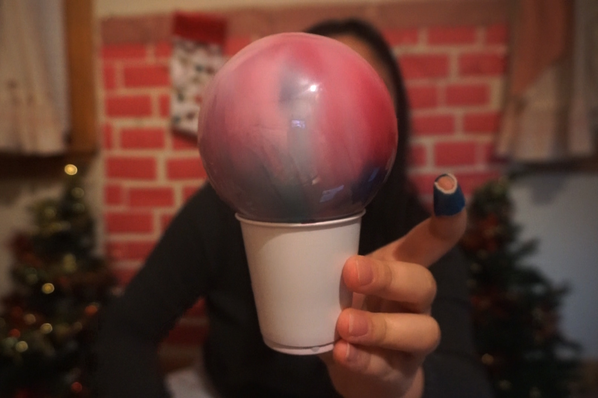
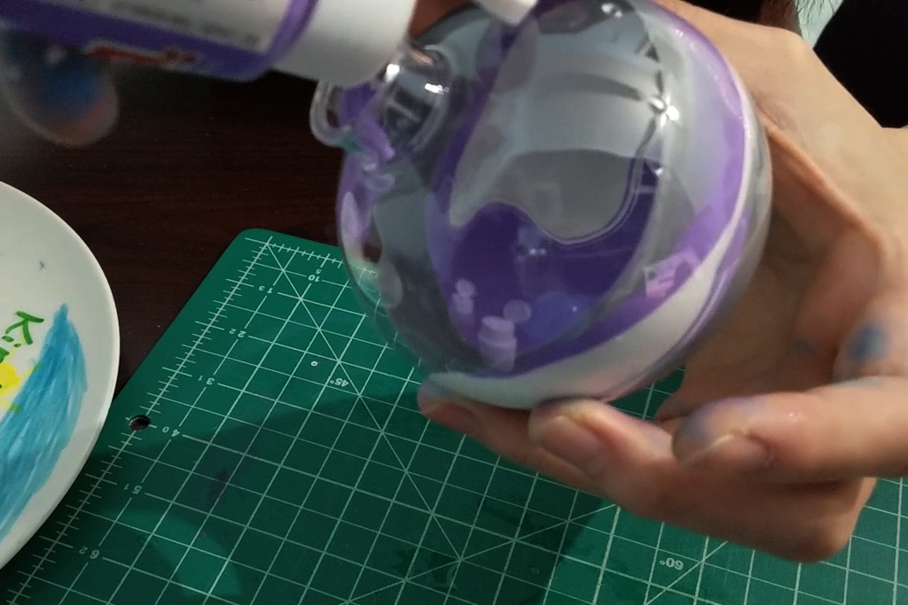
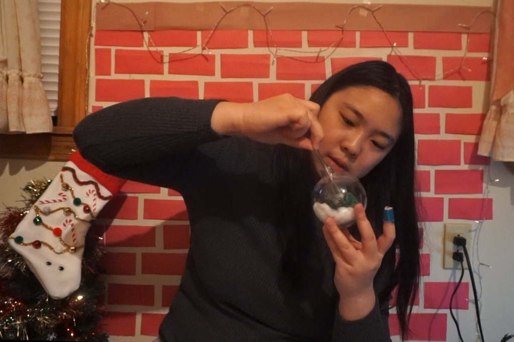
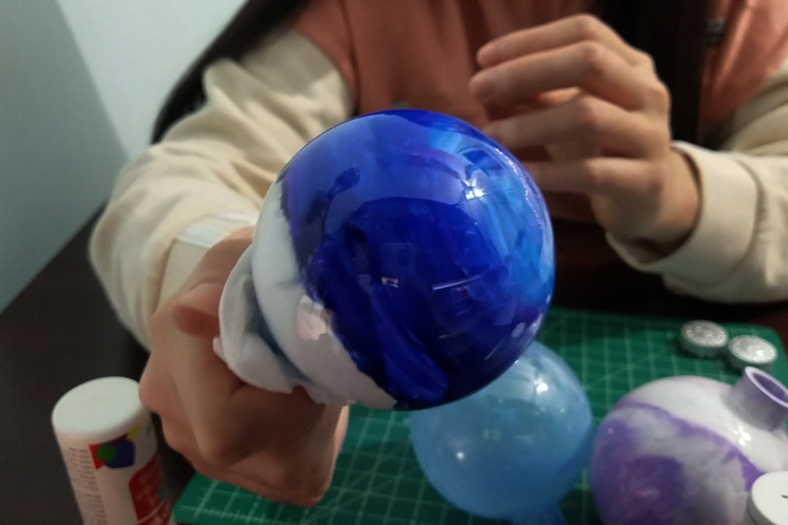
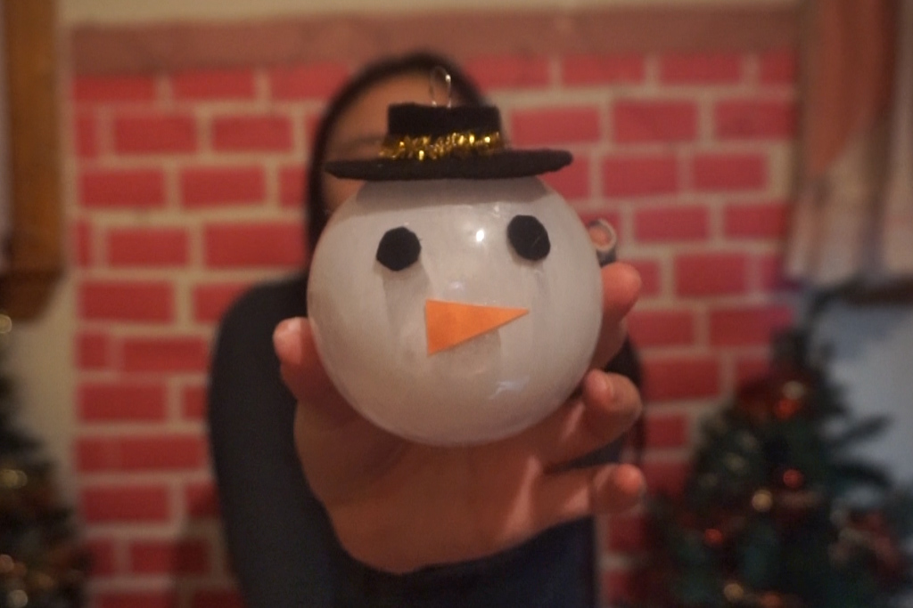
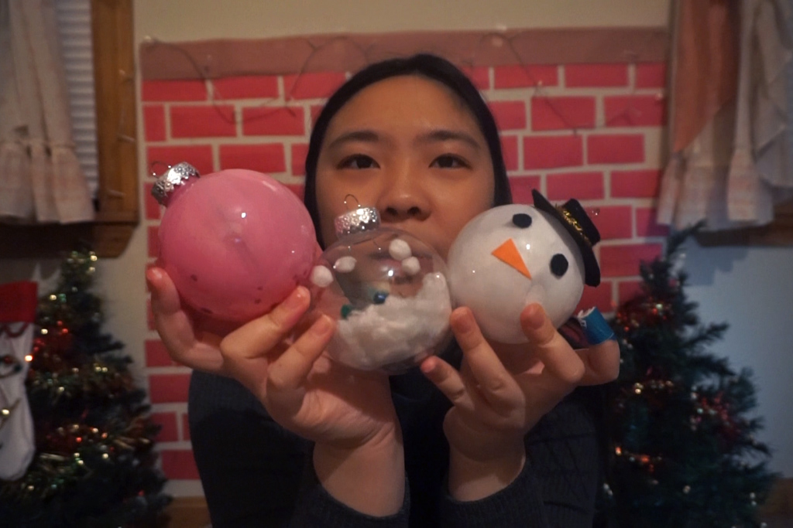
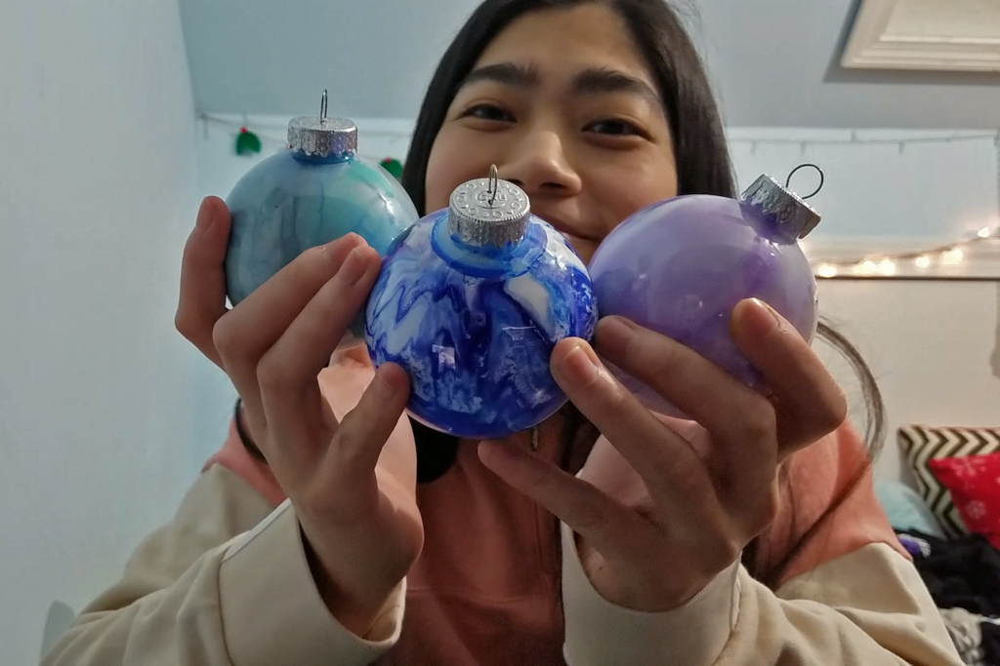

7 Days of Christmas - DIY Ornaments
Dec 24 - Written by Bonnie and Emily
Welcome to our sixth video in the Seven Days of Christmas series where we attempt to make our own ornaments! It’s Christmas Eve and we figured we’d show you all some easy last minute decorations to fill up your tree!
After seeing all the different ideas you can do with clear ornaments, we got our hands on a couple to attempt some of them that we saw floating around Pinterest. To no one's surprise, of course we went into this DIY without any plan or idea of how to execute and of the ornament ideas. Our crafts definitely involved a lot of experimenting as well as trial and error until we achieved something we were both happy with.

The first ornament we both decided to do was a marble one where you pour a bunch of paint into a clear ornament and let the colors flow throughout to create a marbling effect. We weren’t quite sure what we were doing but we figured it was going to be an easy one -- like what could go wrong with putting paints into an object and swishing it around before drying?
Little did we know, so much could go wrong. Since we were using thicker acrylic paints, we thinned out the paint with some water so that it could freely flow around the ornament but in doing so, we accidentally thinned out the pain too much so as the paint was drying, most of it flowed out of the ornament leaving us with two very transparent ornaments with a hint of color.
Since the first ornament didn’t go as planned, Emily decided to take another shot at marbling an ornament and tried it again with a different type of acrylic. This time, a thinner paint so that she wouldn't have to thin it out. This version went a lot smoother although it is hard to get the desired effect since the paint will continue to shift around as it dries. But overall, we learned that in order to do a marble ornament, you really have to get the appropriate paint or paint consistency or you could end up with just a very transparent ornament.
Bonnie decided to give up on the marble idea and went to work on another idea she had seen on Pinterest--filled ornaments! But because she couldn’t find the perfect mini Christmas trees for her ornament she decided to dive into an unknown crafts path--making her own. Somehow without a plan, she was able to pile a bunch of green pipe cleaners together to make a relatively close looking pine tree. Since she also couldn’t find snow that she wanted, she opted for ripping up cotton shreds to make what ended up being quite adorable, a snow and Christmas tree filled ornament!
For her last ornament, Emily wanted to do something that remained within the color scheme she had going so she decided she’d paint the inside blue/purple and then decorate the outside; however, along the way, she realized a paint brush can only paint half the ornament so she shifted gears and started developing a new plan. In the end, this new plan didn’t go as intended but left her with her favorite ornament out of the three.
Bonnie’s last ornament took the role of a winter classic, a snowman. Since we did not have the ideal paints for this project, Bonnie had to thin out her white paint again to coat the inside of her ornament. As you may already know, her snowman did end up being a little opaque but her little snowman details made up for it! Making a little top hat and carrot nose, she named her snowman Bolaf (Olaf with a B) just for fun.


Overall, these DIY ornaments didn’t quite go as planned but they still turned out really cute! You can do something more crafty like what Bonnie did with her ornaments or do something more simple like Emily, they’ll turn out great regardless!